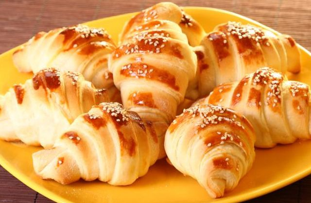
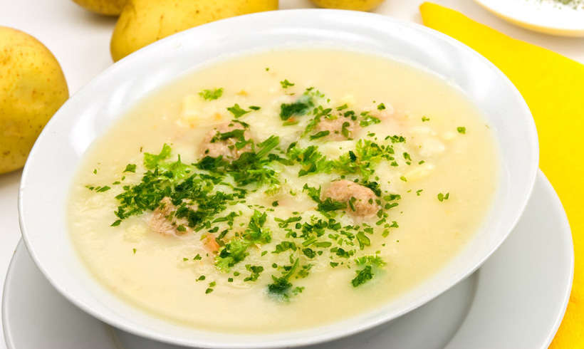
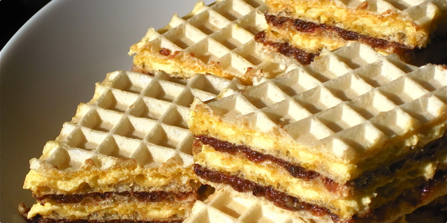

U toplo mleko staviti 2 kasike ostrog brasna,
malo secera i paketic kvasca i sacekati
10 minuta da kvasac nadodje.
2.
Pomesati brasna sa uljem i solju i
dodati kvasac te umesiti testo koje
se ne lepi za ruke, ali ne sme biti tvrdo.
Dobro ga mesiti na pobrasnjenoj dasci bar
5 minuta uz dodavanje brasna ako je potrebno.
Prekriti testo i ostaviti na toplom 30 minuta da
udvostruci kolicinu.
3.
Pripremiti slani preliv. Pomesati so i brasno i
polako dodavati hladnu vodu i mesati da
nema grudvica.
Gustina je kao testo za palacinke.
4.
Od uskislog testa kidati ili nozem odsecati
male kuglice i prstima tanjiti u dug stapic.
Smotati perecu i slagati na podmazan pleh.
Samo malo podmazati uljem.
5.
Ostaviti da kisnu oko 10 minuta dok se rerna
zagreje na 250 stepeni.
6.
Pre stavljanja u rernu perece premazati
umucenim jajetom.
Peci perece do blago zute boje,
izvaditi i staviti po njima slani preliv i
vratiti jos 2-3 minuta da se lepo zarumene,
a preliv osusi.
oceni
Integralni hleb
1. Kvasac razmututi sa malo vode.
2. U vanglu za mešenje sipati brašno, dodati so, promešati. Dodati razmućen kvasac i mlaku vodu, pa mesiti varjačom dok se ne dobije glatko testo. Sud pokriti plastičnom folijom i ostaviti oko 1h da testo naraste.
3. Premesiti, oblikovati veknu (mo쬰te napraviti tri male vekne od ove količine), pore캠ati u pleh. Veknice ovlaš posuti brašnom, pa zaseći no쬰m par puta. Ostaviti još 20 minuta.
4. Za to vreme ugrejati rernu, pa ispeći hleb (kod mene se obično peče 10 minuta na maksimumu pa još 20 na 180).
oceni

Kroasan sa sirom
Razmutiti kvasac sa vodom,mlekom i mineralnom vodom.Dodati šećer i nekoliko kašika brašna.Varjačom promešati i ostaviti 5 minuta da krene kvasac.U odgovarajuću posudu staviti jaje,jogurt,so,belance,isipati nadošli kvasac i sa brašnom zamesiti glatko testo.Testo pokriti krpom i ostaviti na toplom da nado캠e,Nadošlo testo podeliti na 2 dela a svaki deo još na 5 loptica.Svaku lopticu razviti oklagijom veličine tanjira i premazati je omekšalim margarinom.Slagati jednu na drugu koru svih 5 ali zadnju nemojte premazivati.Postupak ponoviti i da drugim delom testa. Točkićem za testo preseći testo najmanje 16 puta.Ako 쬰lite manje kroasane preseći još dodatno nekoliko puta.Na svakom širem delu stavite parče sira i smotajte kroasan.Jednom rukom motajte a drugom razvlačite testo da bi se više puta uvio kroasan.Pore캠ajte u plehu sa blagim razmakom.Postupak ponoviti i sa ostalim testom.
oceni

Čorba
Luk iseći na sitne kockice i staviti da se dinsta na ulju. Dodati šargarepu tako캠e iseckanu na kockice i dinstati nekoliko minuta dok ne omekša. Dodati meso, propr쬴ti ga, posuti jednom i po kašikom brašna, izmešati i zatim doliti toplu vodu. Kada prokuva, dodati začine i peršunov list i ostaviti da se kuva na umerenoj temperaturi oko sat vremena. Kada je skuvana skinuti sa vatre i dodati 쬿mance i pavlaku. Umutiti 쬿mance sa pavlakom, sipati malo čorbe, razmutiti i vratiti u čorbu.
oceni
D쬬mbo burger
Pomešajte meso i ostale sastojke za smesu u blenderu ili električnoj seckalici. Blendirajte dok se meso potpuno ne usitni i dok se svi sastojci ravnomerno ne rasporede. Izvadite iz seckalice pa podelite na tri jednaka dela i formirajte lopte. Ako nemate veći tiganj onda ćete peći jedan po jedan burger, u tom slučaju na srednjoj vatri zagrejte 3-4 kašike maslinovog ulja. Dok se ulje greje formirajte burger: nauljenim rukama na aluminijumskoj foliji (da biste lako skinuli formirano meso) ravnomerno raspore캠ujte smesu tako da dobijete krug 0,7cm debljine i prečnika oko 10cm. Formirano meso stavite na zagrejano ulje pa pecite oko 4-5 minuta sa svake strane. Kada okrenete burger, na njega postavite lepinju da se greje i upija ukuse. Lepinju mo쬰te preseći i poprečno na dva dela pa jedan po jedan stavljati na burger dok se dobro ne zagreju. U me캠uvremenu formirajte i druge burgere. Sklonite lepinju pa zatim izvadite i pečeni burger iz tiganja pa stavite još malo ulja i sledeći burger. Na jednu polovinu lepinje nama쬴te senf, pa stavite vrući burger. Preko burgera odmah stavite šnite mocarele, kolutove luka i kiselog krastavčića, pa zatim hrskavu slaninicu, kupus i kečap. Poklopite drugom polovinom lepinje i poslu쬴te uz dobro ohla캠eno pivo i jeftine fast food salvete 游뗵
oceni
Pileća salata
Pileće belo meso operite i osušite. Svako parče potopite u umućeno jaje, uvaljajte u kornfleks, pore캠ajte u podmazan pleh oblo쬰n papirom za pečenje i pecite 20 minuta u rerni zagrejanoj na 100 stepeni, a zatim ostavite sa strane. Oba avokada prepolovite i uklonite im košticu. Kašičicom izvadite pulpu jednog avokada, pomešajte je sa sokom jednog limuna i sna쬹o promešajte. Pulpu drugog avokada iseckajte na kriške, prelijte sokom preostalog limuna i sačuvajte za kasnije. Pripremljeni pire od avokada pomešajte sa majonezom, dodajte pikantni senf i kiselu pavlaku i sve sjedinite. Salatu operite, odvojte i prstima iscepkajte listove, pa preručite u veću posudu. Dodajte paradajz isečen na kriške, iseckani mladi luk, ohla캠enu piletinu i kriške avokada. Posolite, dodajte pola količine pripremljenog preliva od avokada i majoneza i promešajte, a drugu polovinu prelijte preko salate. Do serviranja čuvajte u fri쬴deru.
oceni

Čokoladne oblande
Mleko i šećer prokuvati, dodati vanilin šećer, maslac, keks i orahe. Skloniti sa vatre pa dodati jedno po jedno jaje.
Ostaviti fil da se dobro ohladi, a nakon toga filovati oblande.
oceni
Sufle
Na tihoj vatri istopiti margarin i čokoladu da se dobije glatka masa. 2. Dok se to topi dobro umutiti 4 jajeta i postepeno dodati šećer. 3. U umućena jaja i šećer dodati rastopljenu masu.. 4.Kada se sve to dobro umuti dodati brašno, još malo mutiti, pa zatim u kalup za projice staviti papirne korpice, prečnika 6-7 cm, i u njih sipati masu do vrha. 5. Peći na temperaturi od 220°C 7 min. dok se ne napravi tanka kora.
oceni
Saher torta
Priprema: u posudu usuti šećer, vanilin šećer, omekšati puter i izmešati mikserom. Zatim dodati 쬿manca i ponovo nastaviti mešati. Odvojeno od toga, čokoladu otopiti na pari i tako istopljenu je lagano sipati u pripremljenu smesu, neprestano mešajući. Belanca je potrebno odvojeno umutiti, posoliti, dodati i šećer u prahu i dobro izmutiti. Trećinu dobijenog šama od belanaca, lagano umutiti u pripremljenu prvu smesu, a u ostatak šama umešati sa brašnom i praškom za pecivo. Nakon svega, spojiti obe smese. Smesu je potrebno peći 45-50 minuta na 180 stepeni. Nakon što se pečeni biskvit ohladi, potrebno ga je prerezati vodoravno na dva dela.
Polovinu d쬰ma namazati po donjoj polovini torte, a drugu polovinu na vrh torte. Za glazuru, puter otopiti na laganoj vatri, lagano mešati, dodati čokoladu i mešati dok se čokolada u potpunosti ne otopi. Gotovu glazuru preliti preko torte.
Tortu je potrebno izvaditi iz fri쬴dera, nekih 30 minuta pre poslu쬴vanja, kako bi glazura malo omekšala i kako ne bi popucala prilikom rezanja.